安装环境
Node
MongoDB
https://jingyan.baidu.com/article/d5c4b52bef7268da560dc5f8.html（将MongoDB作为系统服务开机启动）
初始化项目
新建工程目录avatar，进入该目录命令行 npm init
新建avatar/app.js文件
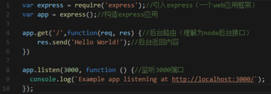
执行命令 npm install express –save-dev
执行命令 node app
浏览器打开 localhost:3000
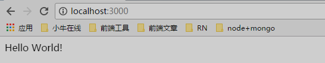
改动app.js，添加静态资源访问路径
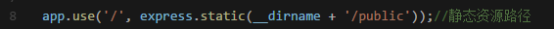
新建avatar/public/cms/local/sign/html/signin.html 文件
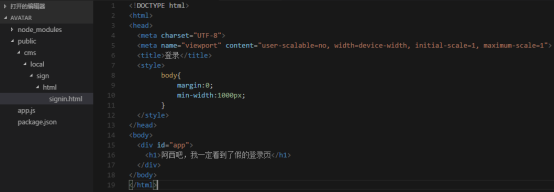
浏览器打开 http://localhost:3000/cms/local/sign/html/signin.html
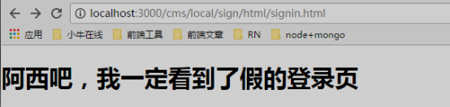
好的，我们再结合点react玩玩，新建avatar/public/cms/local/sign/js/signin.js 文件
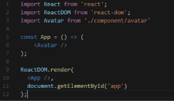
可以看到引入了自定义组件Avatar，
所以再新建avatar/public/cms/local/sign/js/component/avatar.js 文件
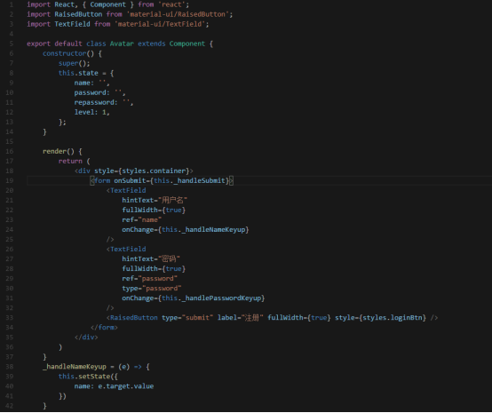
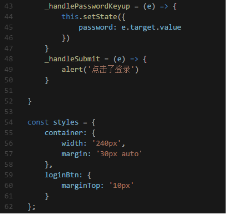
接下来安装react、react-dom、material-ui
npm install react@15.5.4 --save-dev
npm install react-dom@15.5.4 --save-dev
npm install material-ui@0.19.4 --save-dev
然后修改signin.html
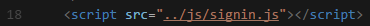
Ok,现在我们在浏览器打开http://localhost:3000/cms/local/sign/html/signin.html
你以为有了真正的登录页了吗，你错了，而是会像下面这样
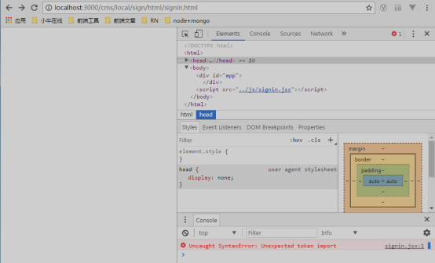
傻了吧，告诉你不能用import
所以我们要使用gulp将静态资源打包成浏览器能识别的语法
命令行执行 npm install gulp@3.9.1 –save-dev
npm install browserify watchify babelify vinyl-source-stream
vinyl-buffer gulp-watch lodash gulp-util –save-dev
新建 avatar/gulpfile.js 文件
var gulp = require('gulp'); //gulp核心库
var browserify = require('browserify'); //用于打包的browserify库
var watchify = require('watchify'); //用于加速打包的watchify库
var babelify = require('babelify'); //用于babel转换的watchify库
var source = require('vinyl-source-stream'); //用于文件stream流式化的库
var buffer = require('vinyl-buffer'); //用于buffer化的库
var watch = require('gulp-watch'); //用于监测文件变动的watch库
var _ = require('lodash'); //lodash核心库
var gutil = require('gulp-util'); //gulp工具库
var config = {
local: './public/cms/local', // 开发环境
staging: './public/cms/staging', // 构建环境
production: './public/cms/production', // 生产环境
targets: [
'/sign',
]
}
// 打印文件路径
function consoleTime(path) {
console.log('[' + (new Date()).toString().match(/\d{2}:\d{2}:\d{2}/) + '] ' + path);
}
// =======================打包模块入口js==========================
gulp.task('live', function () {
var entry = './public/cms/local/sign/js/signin.js'
var destPath = entry.split('./public/cms/local/')[1]
var customOpts = {
entries: entry,
debug: true
};
var opts = _.assign({}, watchify.args, customOpts);
var b = watchify(browserify(opts));
b.transform('babelify', { // babel转换
presets: ['es2015', 'stage-1', 'react']
})
b.on('log', gutil.log);
return b.bundle()
.on('error', gutil.log.bind(gutil, 'Browserify Error'))
.pipe(source(destPath))
.pipe(buffer())
.pipe(gulp.dest(config.staging));
})
gulp.task('default', ['live'])
好的，我们在根目录下执行命令 gulp
执行完会自动生成 avatar\public\cms\staging\sign\js\signin.js 文件
此时我们改变 avatar\public\cms\staging\sign\html\signin.html 文件，引入刚打包生成的js
<script src="../../../staging/sign/js/signin.js"></script>
接下来，我们再次在浏览器打开http://localhost:3000/cms/local/sign/html/signin.html
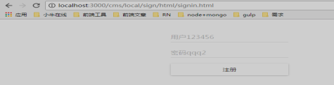
令人激动的 真·登录页出现了
很好很不错，可是public/cms/local目录是本地开发目录
我们要在浏览器看效果还是只想在public/staging目录
所以我们也要将public/cms/local/sign/html/signin.html打包到staging目录
首先修改avatar/gulpfile.js 添加如下代码
// ========================监听CMS模块变动===========================
gulp.task('watch', function () {
config.targets.forEach(function (item, index) { //遍历CMS模块
return (function (index) {
console.log(config.local + config.targets[index])
// html
watch([config.local + config.targets[index] + '/html/*.html'], function (e) {
gulp.src(e.path)
.on('error', function (err) { console.log(err.message); })
.on('end', function () {
consoleTime(e.path)
})
.pipe(gulp.dest(config.staging + config.targets[index] + '/html'))
})
})(index)
})
})
然后修改public/cms/local/sign/html/signin.html
接下来重新执行命令 gulp
将public/cms/local/sign/html/signin.html保存一下
我们发现会自动生成public/cms/staging/sign/html/signin.html文件
然后我们浏览器打开http://localhost:3000/cms/staging/sign/html/signin.html
惊喜的发现，也可以哦~
好了，到此，我们初始化的工作算是做完了，但是，你是否考虑了一些问题，比如：
我在local目录下开发，改变了html或者js文件，要在浏览器看效果时，需要重新执行gulp打包，并且打包之后需要手动刷新浏览器，那么能不能改了local下的文件，自动打包到staging下，并且自动刷新浏览器看到效果呢？
当然可以，且听下回分解~~